ICLR 2025 принесла много полезных работ на тему CV. Мы попросили инженеров Яндекса подвести личные итоги конференции и рассказать, чем она запомнилась. О трендах в индустрии, интересных статьях и многом другом — в наших карточках.
Работы, которые упоминаются в посте:
— Building Safe and Robust AI Systems
— Pursue the Nature of Intelligence
— Adam: A Method for Stochastic Optimization
— Neural Machine Translation by Jointly Learning to Align and Translate
— Finding Outliers Using Representations Typicality Estimation
— MRAG-Bench: Vision-Centric Evaluation for Retrieval-Augmented Multimodal Models
— Benchmarking Multimodal Retrieval Augmented Generation with Dynamic VQA Dataset and Self-adaptive Planning Agent
— MMSEARCH: Unveiling the Potential of Large Models as Multi-modal Search Engines
— MM-Embed: Universal Multimodal Retrieval with Multimodal LLMs
— VLM в Нейро: как мы создавали мультимодальную нейросеть для поиска по картинкам
CV Time
#YaICLR
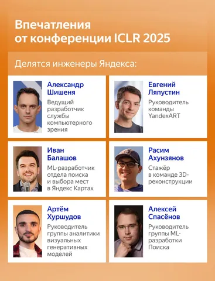 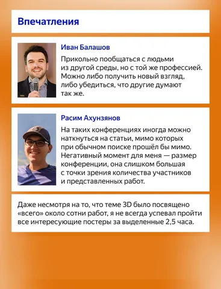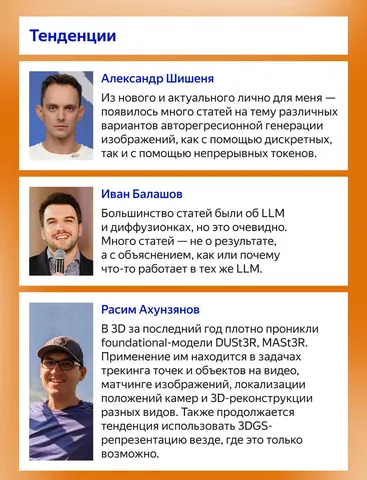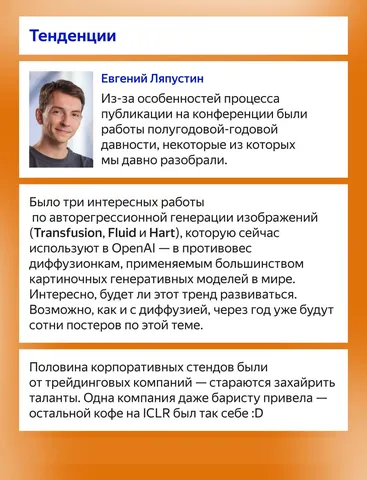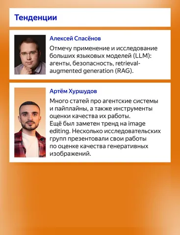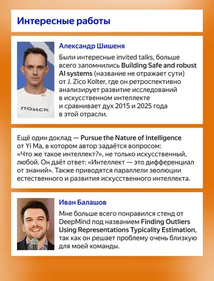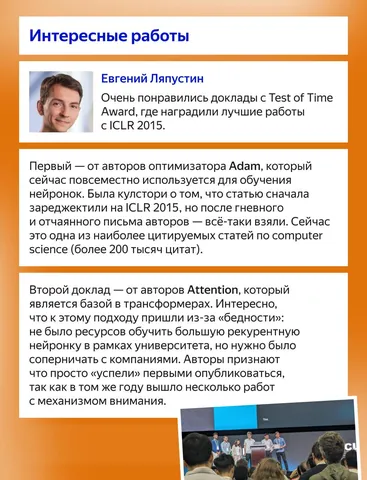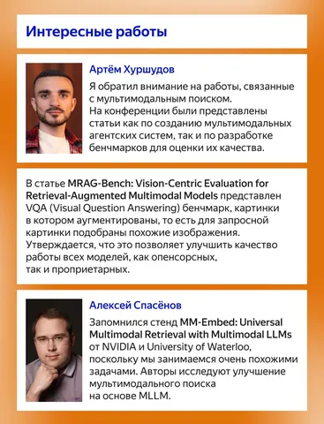
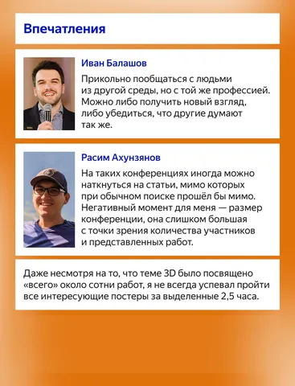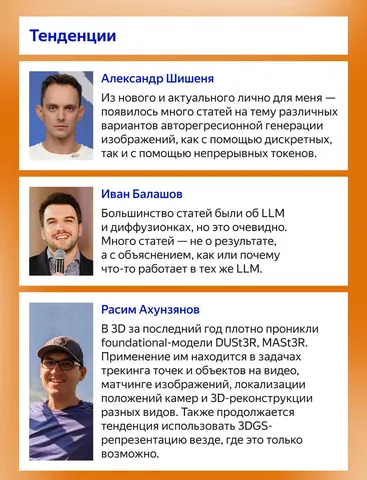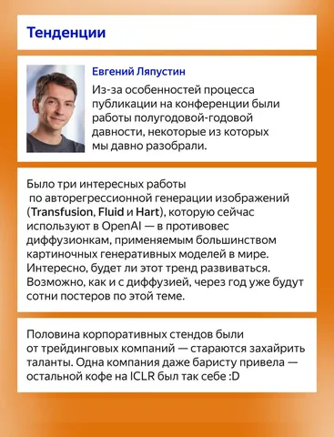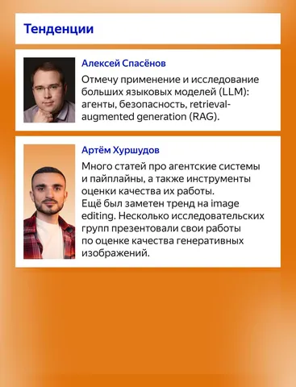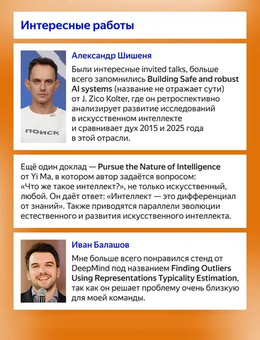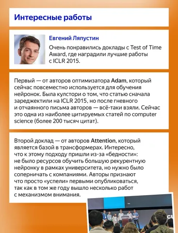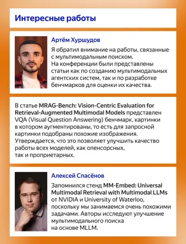
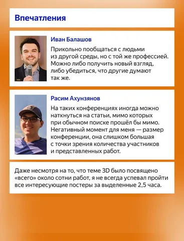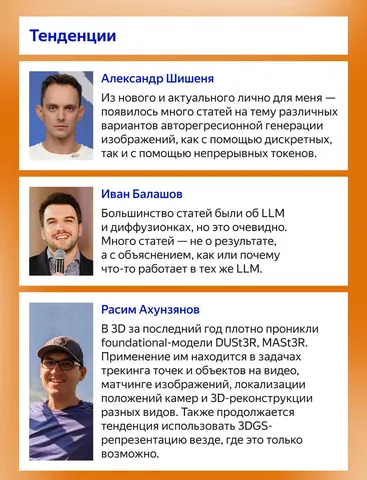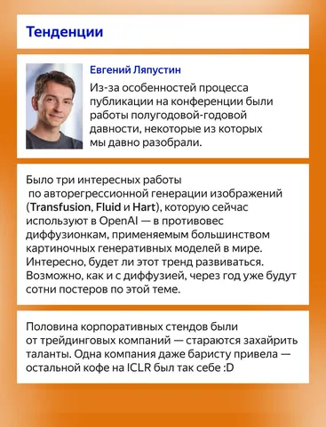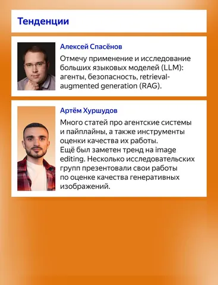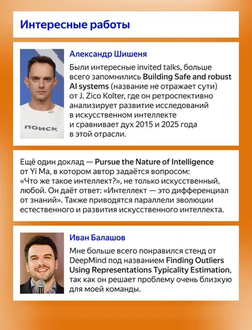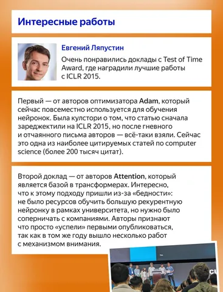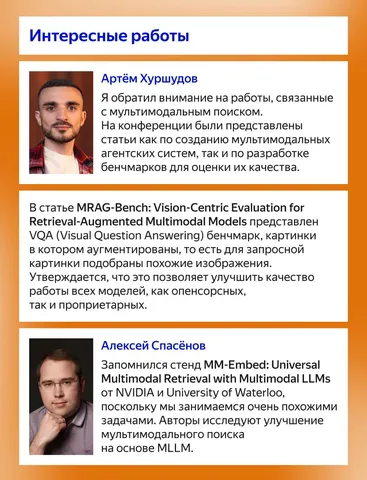